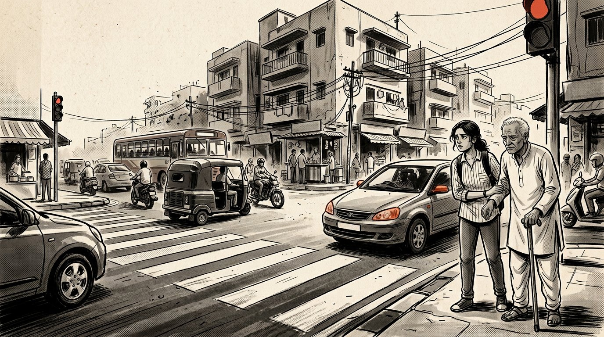
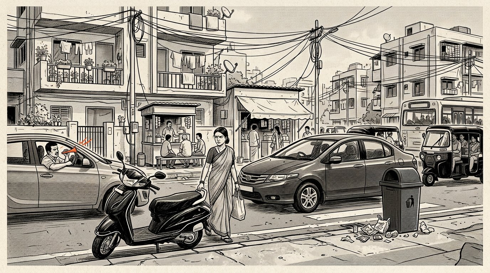
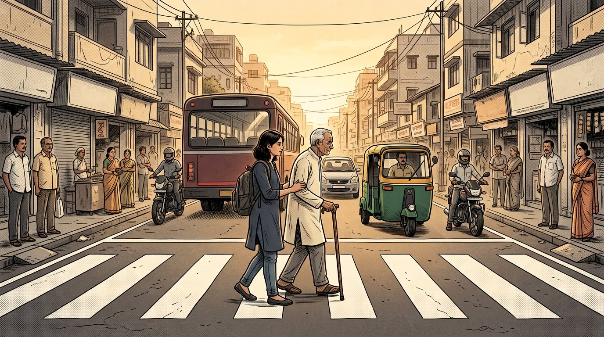

01 / 10 — THE CROSSING
SCROLL TO READ

PUNE · 08:14 AM · MONDAY
Same road.
Every morning.
Tara, 19, knows the signal. Dadu, 72, knows how long it takes to reach the other side.
The walk light is waiting for you.
Tap the signal. Stay with them as the seconds run.
THE STREET DOESN'T PAUSE.
00 / NO TIME LEFT
“Maine kya galat kiya?”What did I do wrong?
Nothing. And still, the road asked him to hurry.
TURN THE PAGE02 / 10 — FIFTEEN SECONDS
THE SAME CROSSING
ONE SIGNAL. MANY BODIES.
Who gets
to the other side?
Choose a walker. The crossing stays the same. So does the timer.
Equal does not
always mean fair.
03 / 10 — LOOK AGAIN
FIND THE EVIDENCE
NOTHING HERE LOOKS EXCEPTIONAL.
Look
again.
Tap the red marks.
The ordinary is full of evidence.

A STREET, ANY TUESDAY · 08:19 AMNone of these moments is rare.
That is the emergency.
04 / 10 — THE AVERAGE HUMAN
TRAFFIC CONTROL ROOM · 08:26 AM
TARA ASKS THE QUESTION THE SCREEN DOESN'T.
The number
looked neutral.
TARA“Average?”
ENGINEER“Most pedestrians can cross within fifteen seconds.”
TARA“But who is the average pedestrian?”
CURRENT ASSUMPTION
THERE IS NO
AVERAGE PERSON.
05 / 10 — THE MIRROR
KEEP SCROLLING TO TURN IT
A CITY FULL OF COMPLAINTS
“Roads are
horrible.”
The blame has a direction. Until the glass moves.
isn't somebody else.
THE GLASS CLEARS.
We blamed the system so often
that we forgot—
a system is made of people.
And sometimes,
we are the system.
06 / 10 — THE NUMBERS
TARA'S FIELD NOTES · 08:14 AM
ONE ROUTE. ONE MORNING. NOT A CITYWIDE SURVEY.
She starts
writing it down.
AT THE CROSSING
11SEC
A student with a light bag.
Across before the signal blinks. Four seconds left.
fast enough.MARGINALIA / THE SAME WALK
Small things
accumulate.
Illustrative marks from Tara's fictional route—not measured city statistics.
The timer wasn't the problem.
The assumption was.
07 / 10 — GIVE THEM 15 SECONDS
A SMALL CAMPAIGN FOR A SHARED STREET
TARA MAKES A SIGN. NOT A SPEECH.
Give them
15 seconds.
At first, a few people laugh.
Most just keep walking.
08 / 10 — THE SECOND PERSON
A CHOICE IS A SMALL KIND OF DESIGN
NO POINTS. NO PERFECT CITIZEN.
One small choice
makes room.
Try three ordinary moments. No one gets it right every time. What happens next is the point.
AT THE FOOTPATH
“Just for a minute.”
A motorcyclist eases toward the curb ramp. The parking spot is tempting. The ramp is someone's way through.
A clear ramp is a route someone can actually use.
ONE PERSON CAN'T CHANGE THE CITY.
THE SECOND CAN.
09 / 10 — 34 SECONDS
TAKE THE TIME YOU NEED
THE SAME INTERSECTION. A DIFFERENT KIND OF WAITING.
This time,
the city waits.
Scroll at Dadu's pace. Nothing is chasing him now.

THE SIGNAL HOLDS.
Dadu takes
the first step.
No horn behind him. No vehicle over the white lines.
The city finally gave them more time.
But that wasn't the real change.
The real change was that people finally stopped stealing time from one another.
10 / 10 — THE CITY
ONE CROSSING BECOMES A COMMON PLACE
THE LAST PANEL ISN'T A PERFECT CITY.
A city should not ask people
to become faster.
It should learn
to become fairer.
A civil society doesn't begin with big laws.
It begins with small things we choose not to do.
DON'T DESIGN FOR THE AVERAGE HUMAN.BUILD FOR HUMANITY.
THE STORY DOESN'T END AT THE CURB.
What will you
not do today?
Choose one. Not as a badge—as a small promise to someone you may never meet.
Your note stays in this browser. No account. No leaderboard.
MAYBE CIVIC SENSE
IS JUST EMPATHY
MADE VISIBLE.
“Someone may need the time
you are trying to save.”